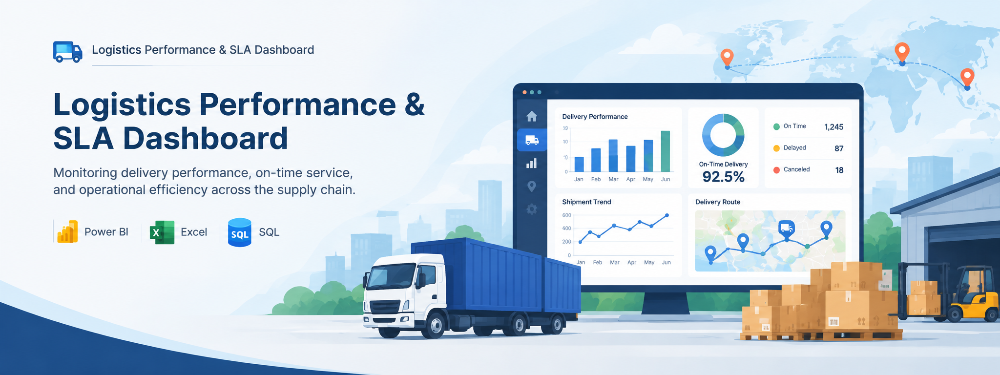

Analisis end-to-end efisiensi rantai pasok, profitabilitas rute, dan kepatuhan Service Level Agreement (SLA) menggunakan Power BI.

Manajemen operasional logistik menghadapi kendala visibilitas dalam melacak performa pengiriman harian dan profitabilitas rute.
Perusahaan logistik membutuhkan alat ukur yang komprehensif untuk mengevaluasi efisiensi operasional. Tanpa pemantauan yang terpusat, Operations Manager kesulitan untuk mendeteksi anomali (seperti paket yang hilang atau tingkat pengembalian yang tinggi), mengukur kepatuhan ketepatan waktu (SLA) berdasarkan tipe layanan, serta mengidentifikasi rute pengiriman mana yang menghasilkan margin keuntungan (*profitabilitas*) atau justru membebani biaya perusahaan.
Untuk menyelesaikan masalah bisnis di atas, proyek analisis data ini dirancang untuk menjawab 10 pertanyaan strategis berikut:
[Bagian ini akan diisi dengan penjelasan darimana data logistik ini berasal, format filenya (CSV/Excel), dan jumlah baris/kolomnya].
[Bagian ini akan diisi dengan proses pembersihan data. Contoh: Mengubah tipe data tanggal, menghapus duplikasi, dan menangani nilai kosong pada tanggal 'Delivered'].
[Bagian ini akan diisi dengan penjelasan pemodelan data (Data Modeling) di Power BI. Contoh: Menghubungkan tabel Fact_Sales dengan Dim_Customer dan Dim_Route menggunakan skema Star].
[Bagian ini akan diisi dengan metode analisis atau DAX Measures yang digunakan untuk mencari Profit, SLA Rate, dll].
[Bagian ini akan diisi dengan logika penempatan visualisasi (Chart, Slicer, KPI Cards) di Power BI].
[Bagian ini akan diisi dengan 3-4 temuan paling krusial dari dashboard].
[Bagian ini akan diisi dengan saran tindakan untuk manajemen berdasarkan insight yang ditemukan].
[Bagian ini akan diisi dengan ringkasan kesuksesan proyek ini secara keseluruhan].